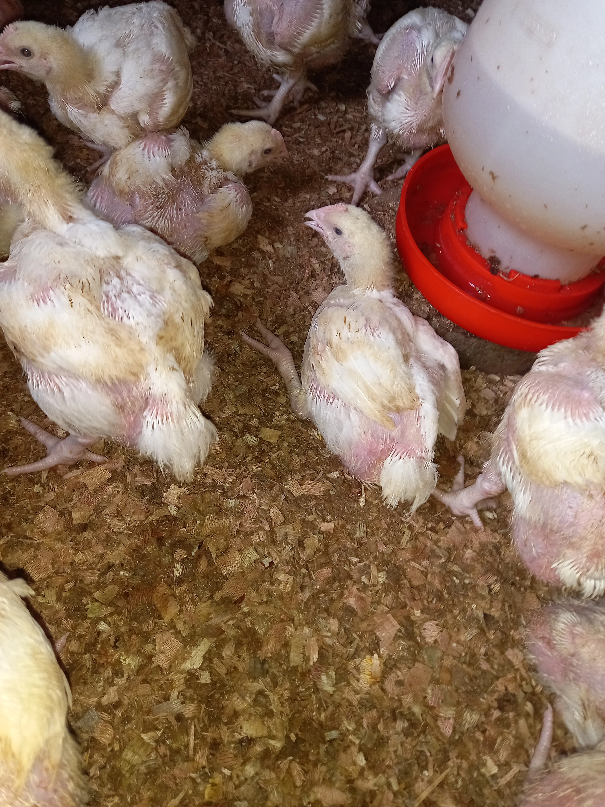

Practical Guide To Starting A Broiler Business From Scratch
Raising chickens can be a fun and rewarding experience, but it requires careful planning and preparation. Before you order chicks, you need to ensure you have the right equipment to care for them.
Firstly, you will need a chicken coop that is properly ventilated to provide fresh air for the chicks. Chickens need enough air to grow, and they can become ill or even die if they lack it. Also, ensure that the coop is safe from predators such as dogs or snakes.the next step is to build a brooder for chicks.
Creating a Brooder for Chicks
Steps to Create a Brooder for Chicks- Choose a suitable location: Select a well-ventilated area in your home or an insulated space in a garage or barn. Ensure the location is free from drafts, excessive noise, and predators.
- Prepare a brooder box or enclosure: You can use a large cardboard box, a plastic storage container, or a wooden enclosure. The size of the brooder depends on the number of chicks you plan to raise. Make sure it is spacious enough to accommodate the chicks comfortably.
- Line the bottom: Cover the floor of the brooder with a thick layer of absorbent material such as wood shavings. Avoid using cedar shavings as they can be toxic to chicks.
- Install a heat source: Chicks require a warm environment, especially during their first weeks of life. You will need a heat source to maintain a consistent temperature in the brooder. A jiko or infrared bulb is commonly used. Attach the lamp securely above one side of the brooder, providing a warm area and allowing the chicks to move away if they become too hot.
- Set up a thermometer: Place a reliable thermometer in the brooder to monitor the temperature. Position it at chick height, close to the warm area. Maintain the temperature at approximately 95°F (35°C) during the first week, reducing it by 5°F (2.5°C) each week until reaching room temperature.
- Provide a water source: Place a chick waterer in the brooder, ensuring it is clean and filled with fresh water. Make sure the waterer is shallow enough for the chicks to drink from easily without the risk of drowning.
- Add chick feeders: Use small chick feeders to offer a balanced chick starter feed. These feeders should be easily accessible to the chicks but not prone to tipping over.
- Create a comfortable space: Add some chick-friendly elements to the brooder, such as small perches or roosts made of wooden dowels. This will encourage exercise and help the chicks develop proper leg and feet strength.
- Monitor and adjust: Regularly check the temperature, water level, and cleanliness of the brooder. Adjust the heat source, if necessary, to maintain the appropriate temperature. Ensure the brooder remains clean and dry, replacing bedding as needed.
- Observe the chicks: Monitor the behavior and health of the chicks closely. Look for signs of distress, sickness, or bullying within the flock. Make any necessary adjustments to the brooder conditions or seek veterinary assistance if needed.
The next step involves placing an order for the actual chicks. It is crucial to source your chicks from a reputable and reliable trader. One recommended option is to consider placing an order with trusted suppliers such as Kenchic or acquiring chicks from reputable sources like Isinya.
Chicken Feeding Program for Broilers
-
Starter Feed (0-3 weeks):
- Offer a high-quality commercial starter feed specifically formulated for broilers.
- The starter feed should have a high protein content (around 20-24%) to support rapid growth.
- Ensure the feed is finely ground to facilitate easy digestion for young chicks.
- Provide feed ad libitum (free choice) throughout the day, ensuring a constant supply.
-
Finisher Feed (3-6weeks):
- Introduce a finisher feed specifically formulated for broilers during the last phase of their growth.
- The finisher feed typically has a lower protein content (around 16-18%) and a higher energy content to promote weight gain and muscle development.
- Continue offering feed ad libitum, ensuring a constant supply.
-
Nutritional Supplements:
- Consider supplementing the broilers' diet with vitamins, minerals, and electrolytes as recommended by a poultry nutritionist or veterinarian.
- These supplements can help address any nutrient deficiencies and enhance overall health and growth.
-
Feeding Management:
- Provide clean, fresh water at all times. Monitor waterers regularly to ensure they are functioning properly and not contaminated.
- Clean and sanitize feeders and waterers regularly to prevent the growth of harmful bacteria.
- Monitor feed consumption and adjust the amount of feed offered based on the broilers' appetite and growth rate.
- Avoid sudden changes in feed formulation or diet as it may cause digestive issues. If necessary, transition between feed types gradually over a few days.
- Practice proper biosecurity measures to prevent the introduction of diseases into the broiler flock.
Remember, a balanced and nutritious feeding program is crucial for optimal growth, health, and profitability of broilers. Consult with a poultry nutritionist or veterinarian to tailor the feeding program to the specific needs of your broilers and ensure their well-being throughout the production cycle.